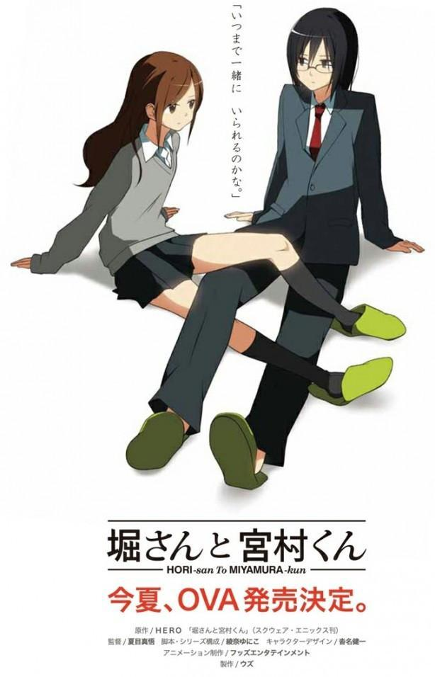
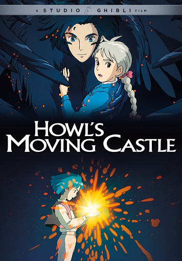
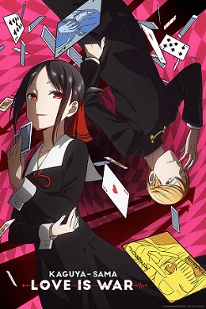
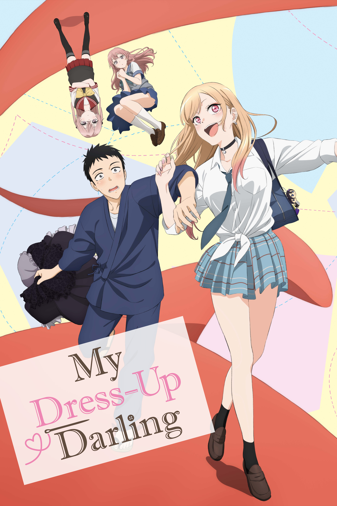
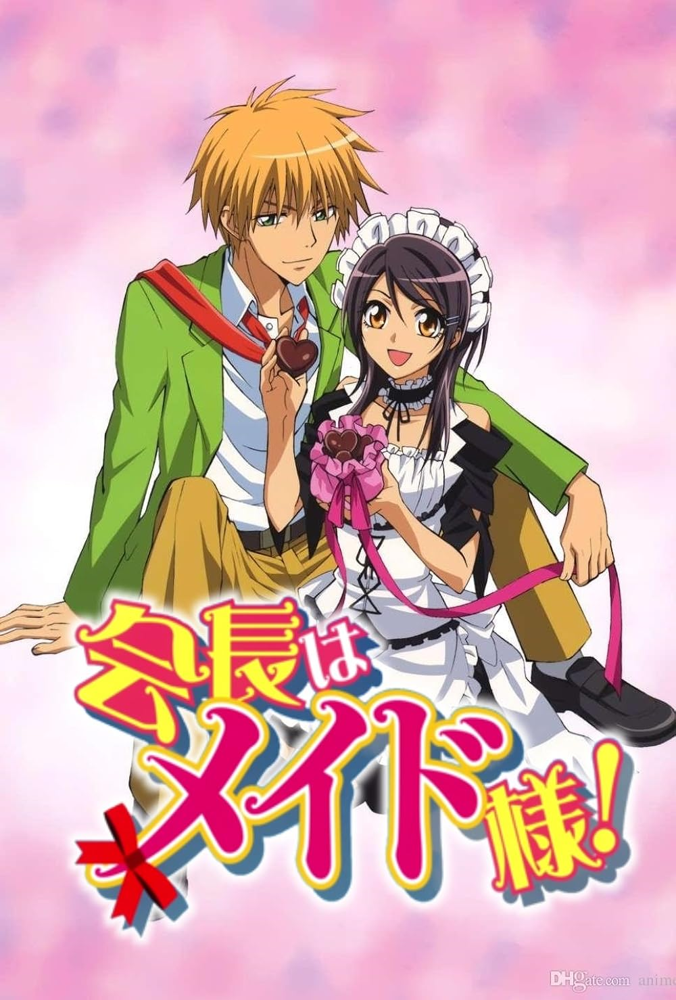
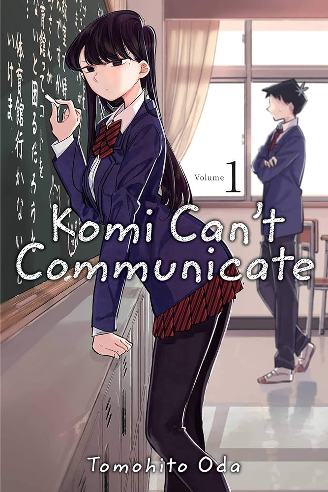

"Your Name," also known as "Kimi no Na wa," is a Japanese animated film
directed by Makoto Shinkai, released in 2016. It is a romantic
fantasy-drama that follows the lives of two teenagers, Mitsuha Miyamizu
and Taki Tachibana, who mysteriously begin to swap bodies. Mitsuha
resides in a rural town, while Taki lives in Tokyo. The two initially
struggle to adapt to each other's lives but eventually develop a unique
form of communication. As they navigate their extraordinary connection,
a cosmic event unfolds, linking their destinies in unexpected and
emotionally charged ways. The film beautifully explores themes of time,
fate, and the profound impact people can have on each other's lives.
"Your Name" is celebrated for its stunning animation, evocative
soundtrack, and the heartfelt narrative that transcends the typical
bounds of romance. It became a massive success both in Japan and
internationally, earning acclaim for its emotional resonance and visual
artistry. "Your Name" is a captivating tale that captures the essence of
fleeting connections and the universal longing for connection and
understanding.
Hori san & Miyamura Kun

"Hori-san & Miyamura-kun," also known as "Horimiya," is a heartwarming
Japanese romantic comedy manga series written and illustrated by HERO.
The story revolves around two high school students, Kyouko Hori and
Izumi Miyamura, who initially appear to be ordinary and unassuming but
lead surprisingly complex lives outside of school. Kyouko Hori is a
popular and outgoing girl known for her social grace, while Izumi
Miyamura is a seemingly introverted and gloomy classmate. However, their
paths intersect when Miyamura's hidden persona as a pierced and tattooed
individual is accidentally revealed when he helps Hori with a favor
outside of school. This unexpected revelation forms the basis of a
unique bond between them. As their friendship deepens, Hori and Miyamura
discover and embrace each other's true selves, transcending societal
expectations and stereotypes. The series navigates themes of
self-discovery, acceptance, and the transformative power of genuine
connections. It delves into the complexities of relationships, exploring
both the challenges and joys that come with understanding and
appreciating someone for who they truly are. "Hori-san & Miyamura-kun"
is celebrated for its relatable characters, humor, and the sincerity
with which it portrays the intricacies of teenage relationships.
Fruits Basket
"Fruits Basket" revolves around Tohru Honda, an orphaned high school
girl who, after encountering the Sohma family's secret, becomes entwined
with their lives. The Sohmas are cursed, each turning into an animal
from the Chinese zodiac when hugged by the opposite gender. As Tohru
befriends these unique individuals, the series delves into their
emotional struggles, family dynamics, and the transformative power of
genuine connections. Combining elements of romance, comedy, and drama,
"Fruits Basket" is celebrated for its heartwarming exploration of
healing, acceptance, and the profound impact of unconditional love.
Your lie in April
"Your Lie in April," known as "Shigatsu wa Kimi no Uso" in Japanese, is
a poignant anime series that explores the themes of love, loss, and the
transformative power of music. The story follows Kōsei Arima, a piano
prodigy who loses his ability to hear the sound of the piano after a
traumatic event. His monotonous life takes a turn when he meets the
free-spirited violinist Kaori Miyazono. As Kaori helps Kōsei rediscover
his love for music, a tender romance blossoms between them. The series
beautifully weaves classical music into its narrative, using it as a
metaphor for life's highs and lows. However, beneath the surface, both
characters harbor personal struggles and secrets that add depth to the
emotional journey. "Your Lie in April" is celebrated for its emotionally
charged storytelling, breathtaking animation, and a compelling
exploration of the characters' inner worlds. It skillfully combines
elements of romance and drama, leaving a lasting impact on viewers with
its poignant narrative and themes of resilience, friendship, and the
pursuit of one's passion.
Hawl's Moving castle

"Howl's Moving Castle" is a captivating Japanese animated fantasy film
directed by Hayao Miyazaki and produced by Studio Ghibli. Released in
2004, the film is based on the novel of the same name by Diana Wynne
Jones. It tells the enchanting story of Sophie, a young woman
transformed into an elderly version of herself by a curse, and her
journey alongside the mysterious and flamboyant wizard Howl. The titular
moving castle is a magical, mechanical structure that serves as the home
and refuge for Howl and his eclectic companions. As Sophie becomes
entangled in Howl's world, the narrative unfolds into a rich tapestry of
magic, love, and self-discovery. The film is celebrated for its
breathtaking animation, imaginative world-building, and Miyazaki's
signature storytelling. "Howl's Moving Castle" explores themes of
identity, the consequences of war, and the transformative power of love.
It enchants audiences with its whimsical charm while delivering a
powerful message about the resilience of the human spirit. Overall,
"Howl's Moving Castle" is a visually stunning and emotionally resonant
masterpiece that has earned acclaim both in Japan and internationally,
contributing to Studio Ghibli's legacy of creating timeless animated
classics.
Kaguya-sama: Love is War

"Kaguya-sama: Love is War" is a Japanese romantic comedy anime and manga
series created by Aka Akasaka. The story centers around the two highly
intelligent and prideful student council members of Shuchiin Academy,
Miyuki Shirogane and Kaguya Shinomiya. Both characters harbor romantic
feelings for each other, but their intense pride prevents them from
confessing their emotions. The series revolves around the comedic and
strategic battles between Miyuki and Kaguya as they attempt to make the
other confess their feelings first. The narrative cleverly plays with
various romantic and comedic tropes, incorporating elements of
psychological warfare as the characters engage in elaborate schemes to
outwit each other. Throughout the series, Kaguya and Miyuki are joined
by other eccentric characters, including Chika Fujiwara, the cheerful
student council secretary, and Yu Ishigami, a reticent yet insightful
member. "Kaguya-sama: Love is War" explores themes of love, friendship,
and the complexity of romantic relationships, all while providing humor
through its witty dialogue and clever visual gags. The series has gained
widespread popularity for its unique premise, well-developed characters,
and its ability to balance comedic moments with genuine emotional depth.
It offers a fresh and entertaining take on the romantic comedy genre,
making it a standout work in the world of anime and manga.
My Dress-Up Darling

"My Dress-Up Darling," also known as "Sono Bisque Doll wa Koi wo Suru,"
is a Japanese manga series written and illustrated by Shinichi Fukuda.
The story centers around the unlikely friendship and budding romance
between two high school students with contrasting interests. The
protagonist, Wakana Gojou, is an introverted and skilled cosplayer who
keeps his hobby a secret due to societal expectations. One day, he
encounters Marin Kitagawa, a cheerful and outgoing girl with a passion
for making doll clothes. Despite their differences, Marin discovers
Wakana's talent for cosplay, and the two decide to collaborate on
creating costumes for Wakana's cosplaying endeavors. "My Dress-Up
Darling" explores themes of self-discovery, acceptance, and the
transformative power of shared hobbies and friendships. The series
combines elements of romance, comedy, and slice-of-life storytelling as
Wakana and Marin navigate the challenges of high school life while
pursuing their individual passions. The manga has gained popularity for
its endearing characters, wholesome moments, and the unique exploration
of the cosplay and doll-making subcultures. It offers a heartwarming and
entertaining narrative that resonates with readers who appreciate
stories about personal growth and the bonds formed through shared
interests.
Darling In the Franxx
"Darling in the Franxx" is a Japanese anime series set in a dystopian
future where young pilots, partnered as male-female pairs, control mechs
called Franxx to defend humanity from mysterious creatures. The story
follows Hiro and Zero Two, a pair with a unique connection, as they
navigate complex relationships, existential questions, and the
challenges of piloting Franxx in the face of impending threats. The
series explores themes of identity, love, and the consequences of a
controlled society.
Maid Sama!

"Maid Sama!" ("Kaichou wa Maid-sama!") is a Japanese romantic comedy
anime and manga series created by Hiro Fujiwara. The story is set in the
fictional Seika High School, which was formerly an all-boys school but
has recently become co-educational. Misaki Ayuzawa, the strong-willed
and determined student council president, is determined to reform the
school's reputation. Misaki, however, harbors a secret—she works
part-time at a maid cafe to support her family. The plot unfolds when
Usui Takumi, a popular and aloof student, discovers Misaki's secret.
Despite initial conflicts, a romantic tension develops between Misaki
and Usui. "Maid Sama!" combines elements of romance, comedy, and
slice-of-life as it explores the dynamics of Misaki's dual life, her
relationship with Usui, and the humorous situations that arise within
the school setting. The series is known for its endearing characters,
comedic moments, and the evolving romance between its protagonists. It
has gained popularity for its lighthearted yet engaging storytelling.
komi can't communicate

"Komi Can't Communicate," known as "Komi-san wa, Komyushou desu" in
Japanese, is a popular manga series written and illustrated by Tomohito
Oda. The story revolves around Shoko Komi, a high school student who is
admired by her peers for her beauty and grace. However, Komi struggles
with extreme social anxiety, making it challenging for her to
communicate effectively with others. The central plot unfolds when
Hitohito Tadano, an average and empathetic classmate, discovers Komi's
communication difficulties. Tadano, wanting to help Komi overcome her
social challenges, becomes her first friend and helps her navigate the
complexities of high school life. The series combines elements of
comedy, romance, and slice-of-life as it explores Komi's journey to
overcome her social anxiety and build connections with her classmates.
Each chapter introduces new characters, each with their own quirks and
personalities, adding to the humor and charm of the narrative. "Komi
Can't Communicate" has gained widespread acclaim for its relatable
themes, endearing characters, and its humorous yet heartfelt portrayal
of social interactions. It resonates with readers for its positive
messages about friendship, understanding, and the importance of reaching
out to others.